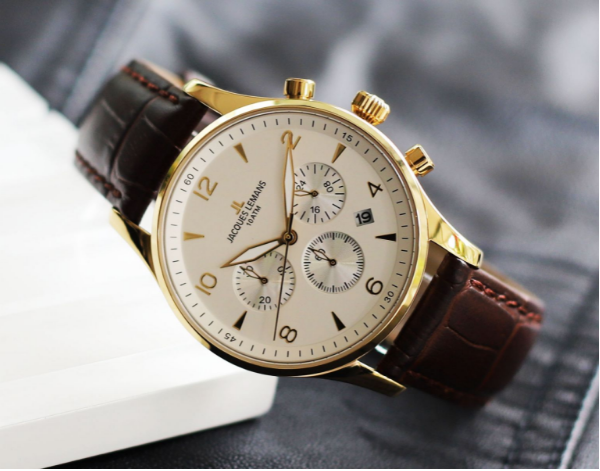
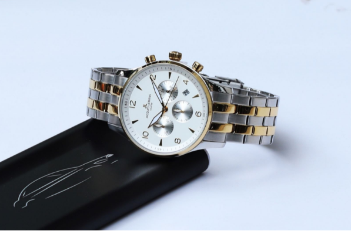
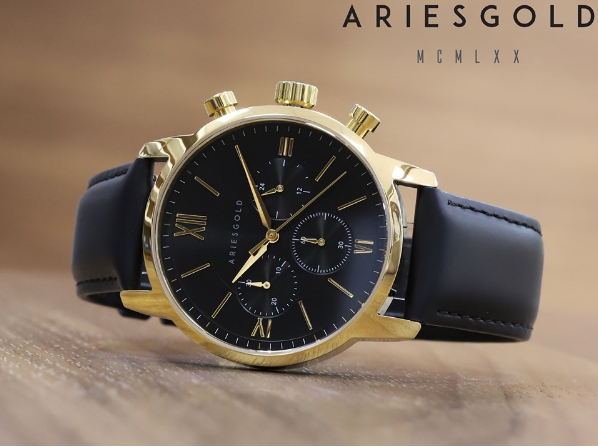
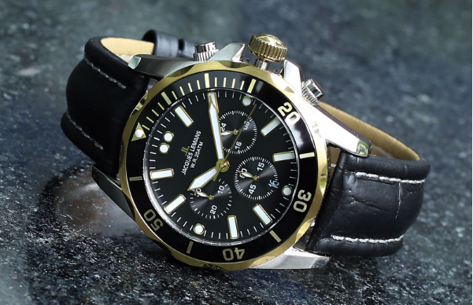

Đứng đầu danh sách Top 3 đồng hồ 6 kim là mẫu đồng hồ Jacques Lemans JL-1-1654 đến từ thương hiệu của Thụy Sỹ.
Chiếc đồng hồ có đường kính mặt vô cùng hoàn hảo 40mm kết hợp cùng vỏ được thiết kế vát cong 2 chiều vì thế vẫn có thể vừa vặn với cả người đàn ông có chu vi tay dưới 16cm.
Thiết kế đa dạng cả về màu sắc mặt số và chất liệu dây gồm cả dây da và dây thép không gỉ, có đến 17 phiên bản khác nhau chính là điểm thu hút của mẫu đồng hồ này.
Ngoài ra, mức độ chịu nước cũng là một điểm mạnh của mẫu đồng hồ JL-1-1654. Độ chịu nước 10ATM có khiến các quý ông hài lòng?!
2. Đồng Hồ Aries Gold AG-G1027 G-BKGAries Gold là nhà sản xuất không có nhiều mẫu Chronograph và mẫu AG-G1027 G-BKG là một trong số sản phẩm hiếm hoi thuộc dòng hồ này được đánh giá là một sản phẩm xuất sắc.
Mặt số của đồng hồ được thiết kế vô cùng thanh lịch và mạnh mẽ với kích thước 44mm. Bộ kim chính và cọc số cứng cáp, nổi bật với màu vàng trên nền mặt đồng hồ màu đen.
Tính năng bấm giờ thể thao cùng đồng hồ 24h được thiết lập rõ ràng bởi 3 mặt số phụ bố trí cân đối - phong cách này khá tương đồng với những chiếc Chronograph tự động đầu tiên ra đời những năm 70.
Các nút bấm cũng được thiết kế với kích thước vừa phải, cảm giác bấm khá nhẹ, bề mặt nút hoàn thiện trơn một cách tỉ mỉ.
Với mức giá chưa đến 5 triệu thì đây quả là một mẫu đồng hồ 6 kim rất đáng mua.
3. Đồng hồ Jacques Lemans JL-1-1907Mẫu cuối cùng trong Top 3 tiếp tục thuộc về thương hiệu Jacques Lemans-một thương hiệu sở hữu một danh sách lớn những mẫu Chrongraph.
 Ảnh 3: Đồng hồ Jacques Lemans JL-1-1907 giá bán niêm yết 6.640.000 VNĐMẫu đồng hồ JL-1-1907 này có thiết kế mạnh mẽ và nam tính; cấu tạo khung vỏ và dây chắc chắn kết hợp cùng vòng bezel bóng bảy và nổi bật với 2 phiên bản dây da và dây kim loại.
Điều tuyệt vời của chiếc đồng hồ này phải kể đến mức độ chịu nước 20ATM cho phép bạn sử dụng sản phẩm ngay cả khi đi bơi.